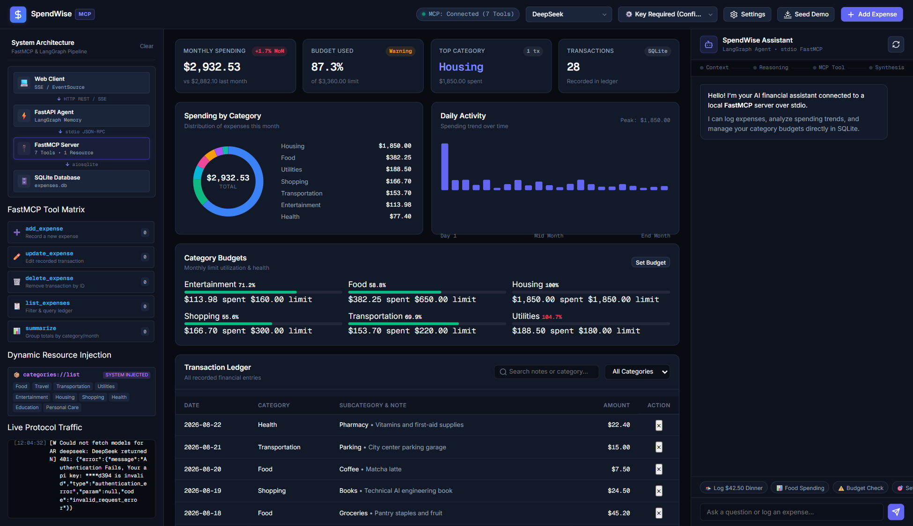
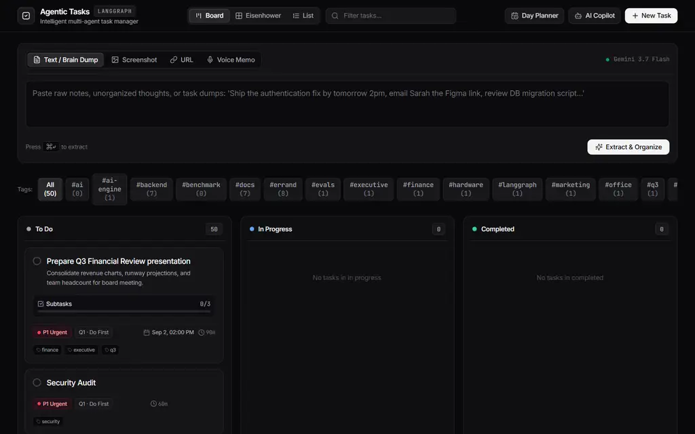

Jun 2026 - Present
Agentic AI Engineer
Deloitte USI
Building production agent systems: retrieval pipelines, evaluation loops, and the tooling that lets them run unsupervised.
Deloitte USI
Building production agent systems: retrieval pipelines, evaluation loops, and the tooling that lets them run unsupervised.
Tata Consultancy Services
Four-plus years in enterprise systems engineering, the production discipline that now shapes how I ship agents.
Same five moves, whether it's a retrieval service or a warehouse copilot.
Before any orchestration code, map the ways the system can go wrong: bad retrieval, hallucinated citations, runaway tool calls, blown budgets.
Model the workflow as a state machine, not a script. Nodes for retrieval, judgment, and correction. Edges for retries and human hand-offs.
Ship the thinnest version that could possibly work, then add tools, memory, and guardrails only as the evals demand them.
An LLM-as-judge scores groundedness and relevance against a strict schema, with a human spot check on anything borderline.
Stream state over SSE, log every decision the graph makes, and leave behind a dashboard someone else can actually read.
Five systems, five different failure modes to design around.
A retrieval-as-a-service microservice with corrective RAG, contextual retrieval, and an LLM-as-judge fast path for high-confidence answers.
View repositoryAn MCP tool server paired with a live financial dashboard that watches the agent reason, call tools, and update budgets in real time.
View repository
Turns screenshots, links, and voice notes into a prioritized todo list, with a human-in-the-loop gate before anything hits the database.
View repository
A hybrid RAG assistant that keeps retrieval and embeddings local, and only calls the cloud for synthesis and grading.
View repositoryA conversational cockpit that turns plain language into read-only SAP warehouse queries: stock levels, picking tasks, and inbound freight.
View repositoryState machines built in LangGraph: conditional edges, retry loops, and human-in-the-loop interrupts for anything that shouldn't run unsupervised.
Corrective RAG, contextual retrieval, reciprocal rank fusion, and layout-aware ingestion for PDFs, tables, and diagrams.
Structured LLM-as-judge grading and groundedness checks, with a fast path for answers the system already trusts.
MCP servers, function-calling agents, and tool integrations that talk to real systems, including SAP warehouse APIs and live budgets.
FastAPI gateways, SSE streaming, and dashboards that show every decision the graph makes as it makes it.
DeepSeek, Gemini, OpenAI-compatible endpoints, and local Ollama embeddings, swapped per task and per budget.
Working stack